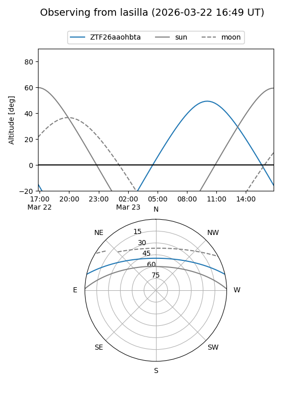
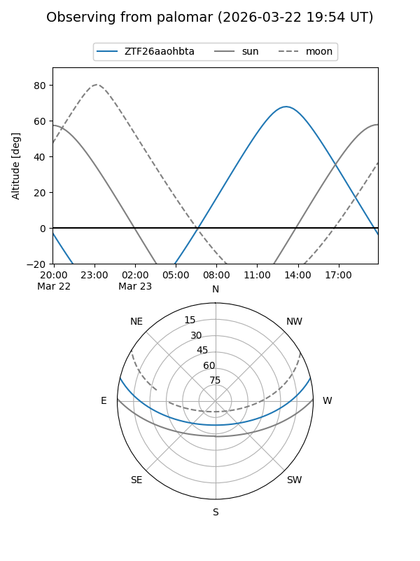

ZTF26aaohbta
Target ZTF26aaohbta at 2026-03-22 14:41
Aliases and brokers:
FINK: link
Lasair: link
ALeRCE: link
alt names
ZTF26aaohbta (ztf,fink_ztf)
Coordinates:
equatorial (ra, dec) = 260.8464,+11.37379
equatorial (HMS+DMS) = 17:23:23.13,+11:22:25.63
galactic (l, b) = (33.4336,+24.64264)
Flags:
Photometry:
last ztfg=17.59
1 ztfg detections
Lightcurve
Visibility


Additional plots